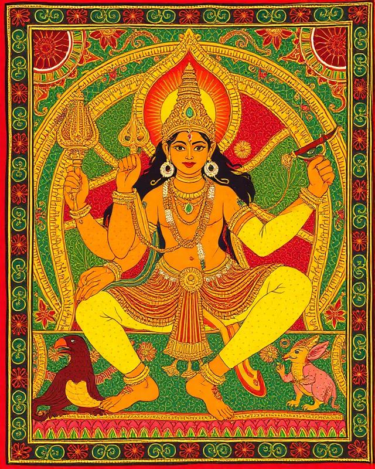

Ancient art of Odisha — where myths breathe through colour
Pattachitra is a centuries-old tradition of cloth-based scroll painting from Odisha. Using natural colours derived from stones, leaves, and flowers, each artwork narrates tales from the Puranas and epics.
As a practitioner of this sacred art, I dedicate each brushstroke to preserving our cultural heritage while sharing it with the modern world. Every piece is hand-painted using traditional techniques passed down through generations.
Love in the groves of Vrindavan
The sacred abode at Puri

Ten divine incarnations